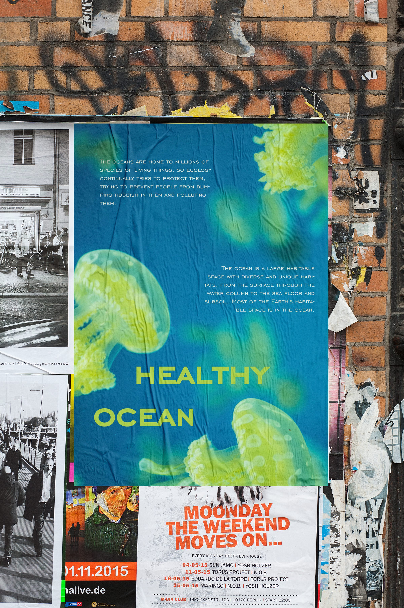
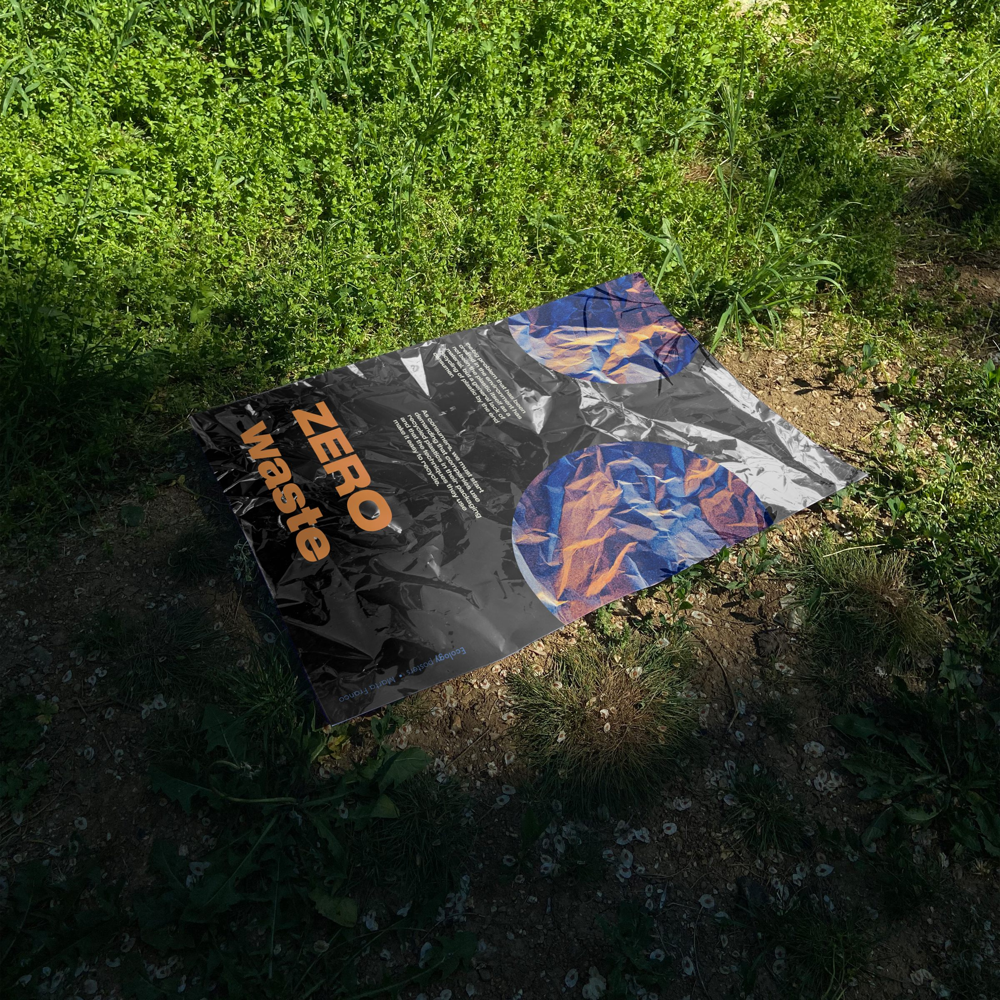
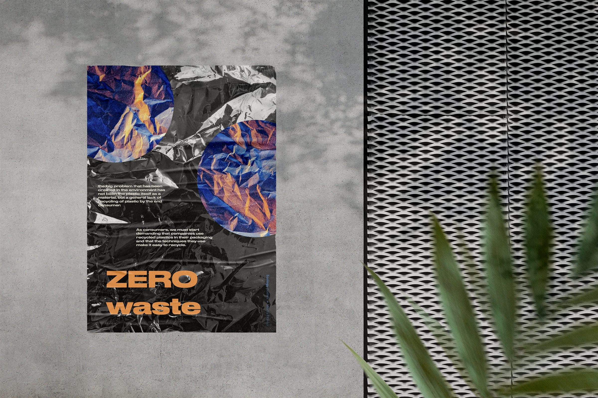

Ecological — Posters
.jpg)
Role
Poster design, Art direction
Type
University project · Erasmus exchange, Slovenia
Year
2023
Tools
Illustrator, Photoshop
A series of three posters raising awareness of plastic and litter in oceans, forests and animal habitats. I developed it during my Erasmus exchange in Slovenia, at the Faculty of Natural Sciences and Engineering, with each poster focused on one area of concern.


Oceans. The first poster focuses on marine pollution and the damage litter causes in the ocean. It pairs striking imagery with data to make the case for marine conservation and push viewers towards concrete action.
Plastic and recycling. The second addresses plastic directly, and the role recycling plays in reducing the waste that ends up in our ecosystems.


Extinction. The third focuses on the extinction of animal species and the urgency of protecting them. It asks viewers to consider their own role in protecting biodiversity and natural habitats.


Together, the three posters carry one message: urgency, and a shared responsibility for the species and habitats at risk.